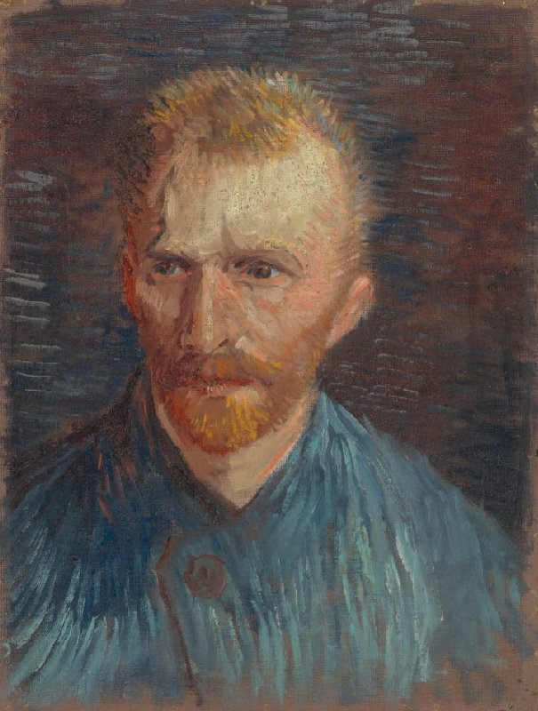
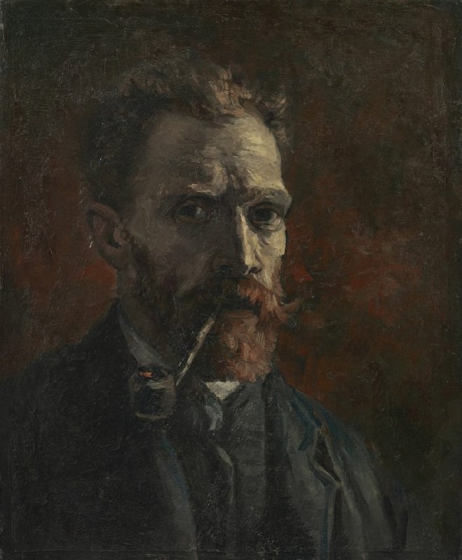
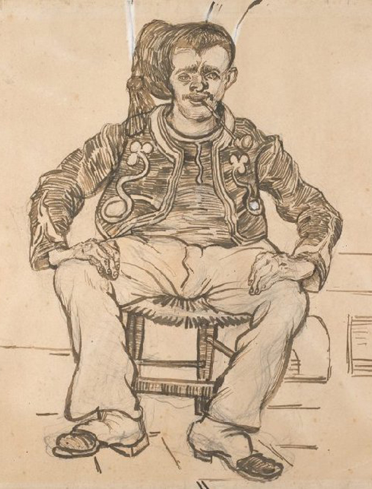

Self-Portraits


Nature Blossom
Chalt and Ink




Self-Portrait with Grey Felt Hat
Vincent van Gogh (1853 - 1890), Paris, September-October 1887
oil on cotton, 44.5 cm x 37.2 cm
Van Gogh painted this self-portrait in the winter of 1887-88, when he had been in Paris for almost two years. It is clear from the work that he had studied the technique of the Pointillists and applied it in his own, original way. He placed the short stripes of paint in different directions. Where they follow the outline of his head, they form a kind of halo.
The painting is also one of Van Gogh's boldest colour experiments in Paris. He placed complementary colours alongside one another using long brushstrokes: blue and orange in the background, and red and green in the beard and eyes. The colours intensify one another. The red pigment has faded, so the purple strokes are now blue, which means the contrast with the yellow is less powerful.
Self-Portrait
Vincent van Gogh (1853 - 1890), Paris, July-August 1887
oil on canvas, 44.5 cm x 33.6 cm
During his time in Paris (1886-1888), Van Gogh painted more than 20 self-portraits. He probably had very little money for models. That led him to take himself as an object of study. Here he portrays himself as an artist in his blue smock-frock. This was what he wore when painting.
Van Gogh painted this on the back of a Study for 'The Potato Eaters', which he had made earlier in Nuenen (NL). By doing that, he avoided the costs not only of a model but also of expensive canvas.
Self-Portrait with Pipe
Vincent van Gogh (1853 - 1890), Paris, September-November 1886
oil on canvas, 46.0 cm x 38.0 cm
Van Gogh painted many self-portraits, more than 20 in Paris alone. In each one he looks different. He saw these self-portraits as a way of practising the art of portraiture. So he experimented with facial expressions, colours and forms.
In Paris, Van Gogh had discovered the work of Adolphe Monticelli (1824-1886). He admired this older French painter for his rich colour palette and thick application of paint. In this self-portrait he tried out Monticelli's approach to colour and light effects. The pale tones of his face stand out starkly against the warm, dark red background.
Self-Portrait
Vincent van Gogh (1853 - 1890), Paris, March-June 1887
oil on cardboard, 41 cm x 33 cm
Around the world, people recognise this man with a red beard and an earnest look in his eyes. Vincent van Gogh painted about 35 self-portraits in total, most of them in Paris. For him, this was a way of practising portrait painting. His intention was not to portray himself as realistically as possible. He used the Neo-Impressionist style here, with short, rough brushstrokes. These alternate with longer strokes, such as the orange in his beard.
The background was originally purple (a mix of red and blue), but the red pigment has discoloured and has become almost completely transparent.
Self-Portrait
Vincent van Gogh (1853 - 1890), Paris, March-June 1887
oil on cardboard, 19.1 cm x 14.1 cm
This self-portrait is one of the smallest oil paintings Van Gogh ever made. Actually, it's more of an oil sketch than a finished painting. He has used a cheap piece of card and worked fast, with fairly broad brushes.
The green of his eyes and the orange of his beard leap out at you. The effect is enhanced by his use of mainly muted colours elsewhere in the picture. Originally, however, his face was more colourful; research has revealed that a red pigment in the paint has faded over time.

Irises
Vincent van Gogh (1853 - 1890), Saint-Rémy-de-Provence, May 1890
oil on canvas, 92.7 cm x 73.9 cm
Van Gogh painted this still life in the psychiatric hospital in Saint-Rémy. For him, the painting was mainly a study in colour. He set out to achieve a powerful colour contrast. By placing the purple flowers against a yellow background, he made the decorative forms stand out even more strongly. The irises were originally purple. But as the red pigment has faded, they have turned blue. Van Gogh made two paintings of this bouquet. In the other still life, he contrasted purple and pink with green.
Allotment with Sunflower
Vincent van Gogh (1853 - 1890), Paris, July 1887
oil on canvas, 43.2 cm x 36.2 cm
The huge sunflower is clearly the main subject of this painting. Van Gogh was very fond of this flower. In southern France, he painted large bouquets of sunflowers. And during his earlier Paris period, he devoted a series of still lifes to this subject.
Van Gogh made this painting on the hill of Montmartre in Paris. In the background, a little bit of the city is visible. On the left are the chimneys of the factories in the Clichy district. He painted this city scene on the back of the painting Head of a Woman, which he had made earlier in Nuenen (NL). This was a way of saving expensive linen canvas.
Vase with Gladioli and Chinese Asters
Vincent van Gogh (1853 - 1890), Paris, August-September 1886
oil on canvas, 46.5 cm x 38.4 cm
This is one of more than 35 flower still lifes that Van Gogh painted in Paris in the summer of 1886. He hoped that paintings of flowers would sell well. These were also exercises in the use of colour and a loose style of painting.
In this still life, he worked with strong colour contrasts in complementary colours, placing green and red side by side, or blue and orange. Pairs like these form the basis of the colour theory of Eugène Delacroix (1798-1863), an artist Van Gogh greatly admired.
View of the Alpilles
Vincent van Gogh (1853 - 1890), Saint-Rémy-de-Provence, 1890
oil on canvas, 33 cm x 28.5 cm
Bluish-purple mountains stand out against the sky. The rugged, bare rock faces contrast with the charm of the flowering trees in the foreground. Van Gogh made this little painting in the walled wheatfield next to the hospital in Saint-Rémy (FR). He could look out of his bedroom window onto that field, with the Alpilles mountain range in the distance.
He wrote to Theo, ' I could certainly do an entire series of these Alpilles, for having seen them for a long time now I've got used to it a little.'
Glass with Yellow Roses
Vincent van Gogh (1853 - 1890), Paris, June-July 1886
oil on cardboard, 35 cm x 27 cm
The bold, expressive brushstrokes and bright yellow flowers contrast with the darker tones of the surrounding elements, highlighting the artist's growing mastery of color theory and light. The transparent glass is subtly depicted, with light reflecting off its surface, adding a sense of depth to the composition.
The yellow roses in the painting likely carry symbolic meaning, representing themes of friendship and love. Van Gogh, whose personal life was marked by loneliness, often used color to convey emotional depth. The vibrant yellows stand out against the muted greens and browns, creating a dynamic visual effect that conveys both energy and fragility. Through this piece, van Gogh captures not only the beauty of everyday objects but also imbues them with emotional resonance, making "Glass with Yellow Roses" a testament to his evolving style and emotional sensitivity during his time in Paris.

Park with Fence
Vincent van Gogh (1853 - 1890), Arles, September 1888
pencil, reed pen and ink, on paper, 31.9 cm x 24.4 cm
Van Gogh had only just gone to live in the Yellow House when he sat down to draw in the park opposite. He was stony broke and had no more paint, but he never let a day go by without working.
The subject may not be particularly exciting: a few trees and bushes behind a fence. But it is intriguing to see how Van Gogh handles it. Note the distinctive way in which he represents the various types of vegetation: dots for the gravel, heart-shaped leaves for the tree on the left. He was using reed pens in different widths.
Avenue in a Park
Vincent van Gogh (1853 - 1890), Arles, May 1888
chalk, pen and ink, on paper, 25.7 cm x 34.8 cm
he work features a tree-lined avenue that leads toward a distant horizon, bathed in warm sunlight. Van Gogh's energetic brushstrokes and vibrant use of color—especially his vivid yellows and greens—imbue the scene with a sense of movement and life, a hallmark of his later style. His fascination with nature is evident as the trees, painted with bold, sweeping strokes, appear to sway in the breeze, conveying both vitality and tranquility.
The work exemplifies a emotional connection to the environment, blending realism with expressive color to create a scene that is both familiar and deeply personal. Through his use of dynamic brushwork and vivid color, van Gogh transforms a simple park avenue into a powerful reflection on the beauty and impermanence of life.
Seated Zouave
Vincent van Gogh (1853 - 1890), Arles, June 1888
pencil, reed pen and ink, watercolour, on paper, 49.3 cm x 61.2 cm
In June 1888, Van Gogh had a stroke of luck. He finally found someone who was willing to sit for a portrait. It was an infantryman from the elite corps known as the Zouaves. This is one of the drawings that he made of him.
Van Gogh had difficulty with parts of the drawing: the cap, for example, appears to be sliding off the soldier's head. And the eyes and nose did not turn out well. Is that because it had been a while since he'd drawn a living model? Or was it because he hadn't used a reed pen for a long time?
Stairs in the Garden of the Asylum
Vincent van Gogh (1853 - 1890), Saint-Rémy-de-Provence, May-June 1889
chalk, brush and oil paint and ink, on cardboard, 63.1 cm x 45.6 cm
Van Gogh probably had only a little bit of leftover paint when he made this in Saint-Rémy. He was also out of canvas. So he used thinned oil paint on cardboard for this view of the garden of the asylum. He had arrived only recently and was not yet allowed to work beyond the garden walls. Later he was also permitted to draw and paint outside the complex.
Here he used not only paint but also coloured ink, which has faded to brown. The paint has also changed colour. This is especially clear in the steps, where the purple hue has become very faint.
Pine Trees and Wall in the Garden of the Asylum
Vincent van Gogh (1853 - 1890), Saint-Rémy-de-Provence, October 1889
chalk on paper, 33.0 cm x 24.7 cm
The painting depicts a serene yet poignant scene of pine trees and a stone wall, capturing the natural beauty of the surroundings. Van Gogh's trademark vibrant colors and energetic brushstrokes convey both the calmness of nature and the underlying emotional intensity that marked his time in the asylum.
The composition of the painting reflects a sense of both confinement and connection with the world outside. The stone wall may symbolize the boundaries and isolation van Gogh felt during his time in the asylum, while the expansive, swirling sky and trees evoke a sense of life and movement. The dynamic brushwork and bold colors in the painting illustrate van Gogh's ability to express deep emotion through landscape, transforming a simple garden scene into a powerful expression of his inner turmoil and resilience.